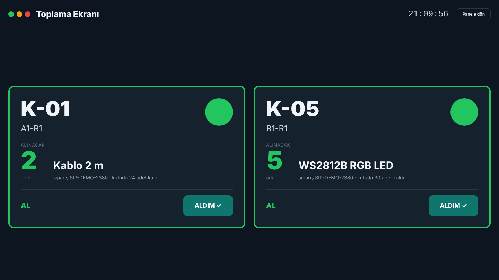

Bu kitapçık kimin için?
Depoda sipariş toplayan operatörler ve vardiya sorumluları için hazırlanmıştır.
Sistemi ilk kez kullanacaklar baştan sona okumalı; deneyimli kullanıcılar
"Işık renkleri" ve "Sorun giderme" bölümlerini el altında tutmalıdır.
Sorun yaşadığınızda önce bu kitapçıktaki "Sorun giderme" bölümüne bakın. Çözülmezse vardiya sorumlusuna bildirin — sistemdeki her işlem kayıt altındadır, hata yapmaktan çekinmeyin.
Her ürünün kendi kutusu vardır ve her kutunun üzerinde bir ışık ile bir onay butonu bulunur. Bir sipariş başlatıldığında, o siparişte geçen ürünlerin kutuları yanar. Operatör ışığı yanan kutuya gider, ekranda yazan adedi alır ve butona basar. Buton basıldığı anda stok otomatik düşer; kağıt liste, elle sayım ve ayrı stok girişi yoktur.
| Renk | Anlamı | Ne yapmalısınız? |
|---|---|---|
| YEŞİL | Stok yeterli | Ekranda yazan adedi alın, kutunun butonuna basın. Normal akış budur. |
| SARI | Stok yeterli ama azaldı | Ürünü normal şekilde alın ve butona basın. Ek olarak sistem otomatik tedarik talebi açar; siz ayrıca bir şey yapmazsınız, yalnızca kutunun yakında boşalacağını bilin. |
| KIRMIZI | Stok yetersiz | Hiçbir şey almayın. O kutunun ışığı zaten yanmaz; sipariş "kilitli" duruma geçer ve alarm üretilir. Vardiya sorumlusuna bildirin. |
K-01), raf konumu (A1-R1) ve
alınacak adet yazar. Kutunun üzerindeki ışık da aynı anda yanar.

Operatör ekranı: alınacak adet en büyük yazıdır; sağ alttaki ALDIM düğmesi buton çalışmadığında kullanılır.
Operatör ekranındaki ALDIM ✓ düğmesine basın. Bu, kutudaki butona basmakla aynı işi yapar: stok düşer, ışık söner. Sistem bu teyidin ekrandan verildiğini kaydeder, böylece arızalı buton sonradan tespit edilebilir.
Kutunun elektroniği sistemle konuşamıyor demektir (fiş çıkmış, Wi-Fi gitmiş olabilir). Çevrimdışı kutudaki stok yeni siparişlere dağıtılmaz. Önce kutunun fişini kontrol edin; 60 saniye içinde kendiliğinden geri dönmezse vardiya sorumlusuna bildirin.
Her ışık için teyit süresi vardır (varsayılan 5 dakika; toplama ekranında geri sayım görünür). Süre dolduğunda sistem o kalemi "beklemede"ye alır ve rezerve edilen stoğu iade eder — yani stok kaybolmaz. Siparişi yeniden başlatmak için vardiya sorumlusuna söyleyin.
Panik yapmayın. Sistem o butonu bekleyen bir kalem olmadığı için teyidi işlemez; "beklenmeyen teyit" alarmı üretilir ve stok değişmez. Yine de vardiya sorumlusuna söyleyin: raftaki gerçek adet değişmiş olabilir.
Sorun değil. Sistem aynı kalem için ikinci teyidi yok sayar; stok iki kez düşmez.
| Belirti | Yapılacak |
|---|---|
| Sipariş başlattım, hiçbir ışık yanmadı | Kutular çevrimdışı olabilir veya stok yetersizdir (kırmızı). Toplama ekranında kalemin durumuna ve alarm satırına bakın. |
| Işık yanıyor ama kutu boş | Ürünü almayın, butona basmayın. Vardiya sorumlusuna bildirin: fiziksel sayım gerekir (Stok Yönetimi → Sayım). |
| Ekran güncellenmiyor | Sayfayı yenileyin (F5). Sorun sürerse bilgisayarın ağ bağlantısını kontrol edin. |
| Giriş yapamıyorum | Parolanızı kontrol edin. Art arda çok sayıda hatalı denemede sistem bir dakika bekletir. Hesabınız pasifleştirilmiş olabilir — sorumlunuza danışın. |
| Butona bastım, stok düşmedi | Ekranda kalem hâlâ "ışık yandı" görünüyorsa ALDIM ✓ düğmesini kullanın. Tekrarlanıyorsa kutunun butonu arızalıdır; bildirin. |